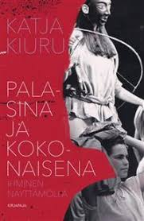
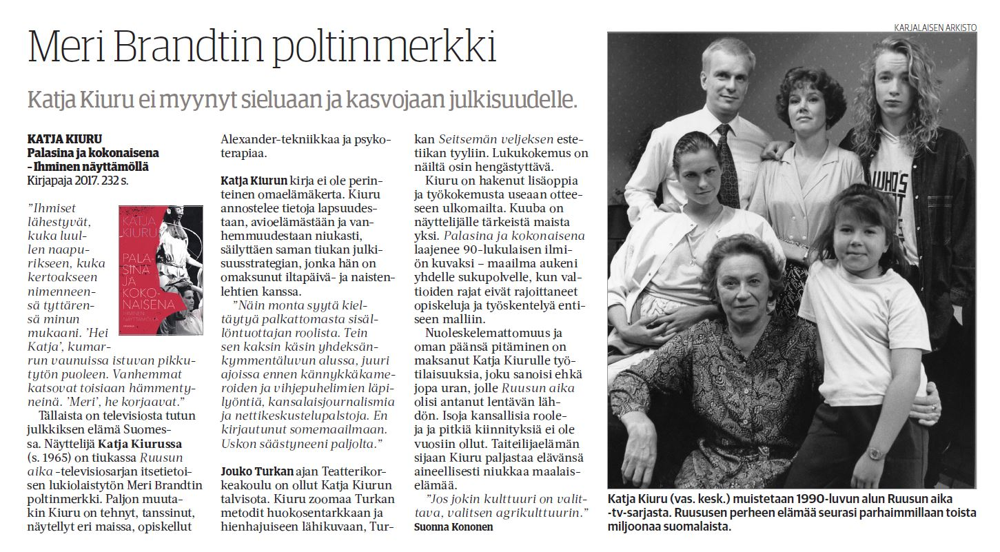
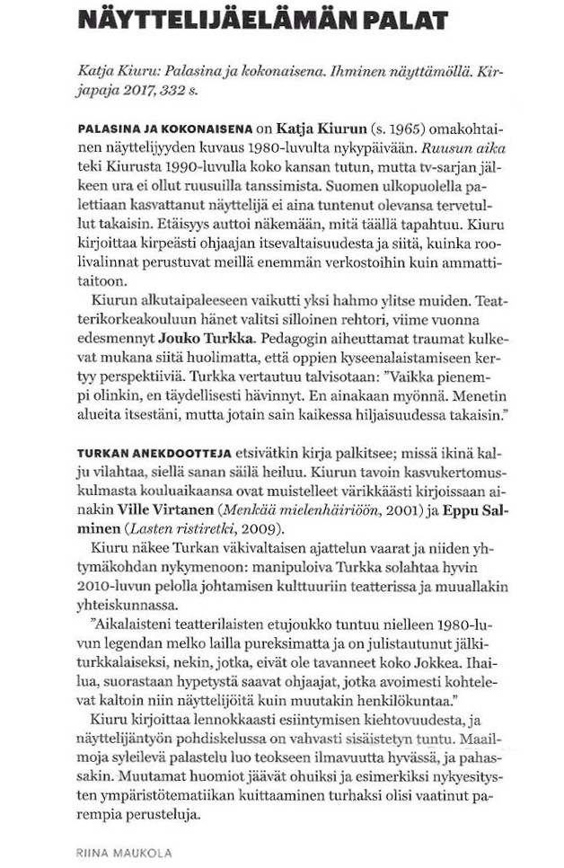

Palasina ja kokonaisena 
Mediassa
Verkkouutiset
/ Markku Jokipii, 10.12.2017
Kirjasta kirjaan -blogi
, Hannele Salminen, 26.11.2017
Yle Puheen Nosto - ohjelma
17.10.2017, toimittajat Linda Vettanen ja Miia Krause
Julkaistu lehdissä Karjalainen (16.1.2018) ja Keskisuomalainen (22.1.2018), kirjoittaja Suonna Kononen

Julkaistu Teatteri & Tanssi + Sirkus -lehdessä 7/2017, kirjoittaja Riina Maukola
